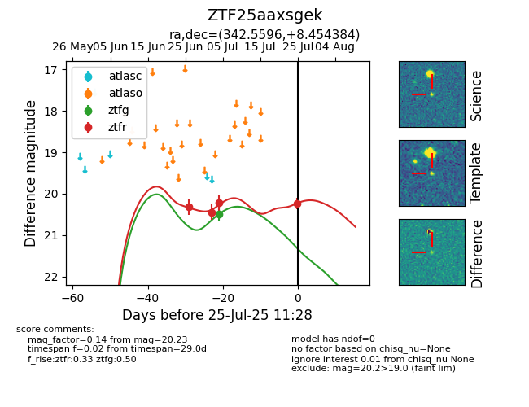

Target ZTF25aaxsgek at 2025-07-25 11:28, see:
FINK: fink-portal.org/ZTF25aaxsgek
Lasair: lasair-ztf.lsst.ac.uk/objects/ZTF25aaxsgek
ALeRCE: alerce.online/object/ZTF25aaxsgek
alt names
ZTF25aaxsgek (ztf,fink)
coordinates:
equatorial (ra, dec) = (342.5596,+8.45438)
galactic (l, b) = (79.1246,-43.86987)
photometry
last ztfg=20.49, ztfr=20.23
1 ztfg, 4 ztfr detections
